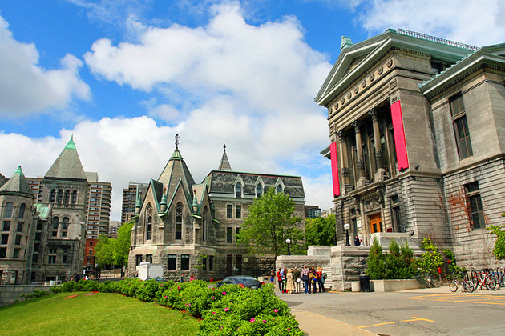

Must See Sites
1. Montréal Attraction Pass |
|
Save money and zip around the city of Montréal with the Passeport MTL. During a 72-hour period, enjoy access to 23 popular attractions and activities, including riverboat cruises, the Biodome, The Montréal Tower and Olympic Park, and more. Bonus: The pass has a built-in chip that gives you unlimited access to public transportation, including the 747 Aéroport P.E.Trudeau shuttle. Getting to know Montréal has never been easier.
|
2. Montréal Tower |
|
Visit the tallest inclined tower in the world with a ticket to the Montréal Tower Observatory, located at Olympic Park. From the top of the tower, which is leaning at an astonishing 45-degree angle, see the entire Montréal region and up to 80 kilometers of the St. Lawrence River valley. This breathtaking panoramic view received the highest rating from the renowned Michelin Guide. Upgrade and add entry to the Montréal Biodome, featuring some of the most beautiful ecosystems of the Americas and more than 4,500 animals from 250 different species.
|
3. Basilique Notre-Dame |
|
The most significant landmark of Vieux-Montréal is this mammoth Gothic Revival undertaking designed by Irish architect James ODonnell and built between 1824 and 1829. This thriving Catholic church has a stunning medieval-style interior that features walnut-wood carvings, exquisite stained-glass windows, 24-carat gold stars in a vaulted blue ceiling, as well as one of the largest Casavant organs in North America. Dont miss the fine art paintings in the nave and the impressive Chapelle du Sacre-Coeur hidden behind the altar.
|
4. Parc Jean Drapeau |
|
Ile Sainte-Héléne (named after the wife of Samuel de Champlain) and the artificial island of Notre-Dame were the site of Expo '67. They are now known as Parc Jean Drapeau and have many family-minded attractions. A remnant of the 1967 world fair, the Biosphere is now a museum dedicated to ecological issues. The building is designed in the shape of a sphere and is the largest such structure in the world. Other tourist attractions on the islands include the rides and games of La Ronde Amusement Park, the historic 1820 British arsenal at the Stewart Museum, Bassin Olympique (where the Olympic rowing events were held), and race course Circuit Gilles Villeneuve.
|
5. Lachine |
|
Lachine, on the southeast bank of Montréal Island (in Lac St.-Louis), got its name from the first pioneers who, in the 17th century, made their way up the St. Lawrence looking for a route to China (in French, "la Chine"). The Lachine Canal, a way of getting round the Lachine Rapids, was dug in 1825. It is many years, however, since it was last used for shipping and nowadays forms part of a park and offers plenty of opportunities for charming trips along the canal banks.
Until 2002 it was a western suburb of Montreal city, at which time it was incorporated into Montreal as a borough of that city.
|
6. Rue Sherbrooke |
| 
Named after Sir John Sherbrooke, Governor General of Canada from 1816 to 1818, Rue Sherbrooke is probably the city's most elegant thoroughfare. It is the spine of the city and the location of many major museums and institutions. On Rue Sherbrooke, the McCord Museum of Canadian History has an outstanding collection of exhibits on Canada's social history, especially native peoples such as the Inuit and Pacific Coast First Nations. The Musée des Beaux Arts is the oldest museum in Canada and houses vast collections of painting, sculpture, and new media. Not far from the museum is the extensive campus of McGill University.
|